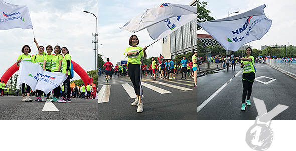

와 제 롤모델이 잡스에요!!! 아이폰 첫 출시되고 나서부터 계속 아이폰 쓰고 있는데 잡스가 너무 그리워요ㅠㅠ 지금은 돈만 벌려고 하는 것 같아서 디자인 발전도 없고ㅠㅠ와 제 롤모델이 잡스에요!!! 아이폰 첫 출시되고 나서부터 계속 아이폰 쓰고 있는데 잡스가 너무 그리워요ㅠㅠ 지금은 돈만 벌려고 하는 것 같아서 디자인 발전도 없고ㅠㅠ와 제 롤모델이 잡스에요!!! 아이폰 첫 출시되고 나서부터 계속 아이폰 쓰고 있는데 잡스가 너무 그리워요ㅠㅠ 지금은 돈만 벌려고 하는 것 같아서 디자인 발전도 없고ㅠㅠ와 제 롤모델이 잡스에요!!! 아이폰 첫 출시되고 나서부터 계속 아이폰 쓰고 있는데 잡스가 너무 그리워요ㅠㅠ 지금은 돈만 벌려고 하는 것 같아서 디자인 발전도 없고ㅠㅠ와 제 롤모델이 잡스에요!!! 아이폰 첫 출시되고 나서부터 계속 아이폰 쓰고 있는데 잡스가 너무 그리워요ㅠㅠ 지금은 돈만 벌려고 하는 것 같아서 디자인 발전도 없고ㅠㅠ
Life Goes On
Half-Marathon Race in My Town
Life Goes On
Half- Marathon Race in My Town
Tamsin Yao / HMM Ningbo
The Jiu Long Lake International Half-Marathon Race was held in my hometown, Zhenhai District, on the morning of April 22, 2018. It is the largest half-marathon race in Ningbo, and also one of the top eight Class A half-marathon races in China.
The race extends from Renmin Square to Jiu Long Lake, featuring a combination of urban elements and rural beauty. Given its attractive course, the race attracts a large number of participants, specifically, 5,000 runners for the half-marathon race, 1,000 for the short-marathon race, and 4,000 for the mini-marathon race. The winner of this year’s half-marathon was Mr. Millio Nurge, from Ethiopia.
While people typically pay more attention to the male runners, female athletes also achieve similar times to their male counterparts. In fact, the women' s marathon was introduced at the 1984 Summer Olympics for the first time, and has grown in popularity ever since. For the Jiu Long Lake marathon, the female winner was Jebet from Kenya.
Linda, Ruby, Amy, Miya and I also joined in the race, comprising the female team of HMM Ningbo TPS. It was Linda, Ruby, and Miya’s first time to join a marathon, and they were really excited for it, even with their concerns that they may not finish the race.

For her part, Amy is a good organizer who played an important role in this activity. She tried her best to instill confidence in members. I also helped by ordering flags on-line and brought bags/clothes to prepare for the coming race.
With the theme of "health, love and environmental protection", there was also a mini-marathon race (3.7 km)
in which 120 people with disabilities participated, also joined by 50 volunteers to help support.
While the marathon race was long and hard, we took as our motivation all different types of people running together, striving to reach the finish line. Similar to a marathon, in life, we also face many difficulties in our life and work.
However, through perseverance and effort, we can overcome. Let’s keep moving and doing our best!
-
Great
322
-
Like
322
-
Sad
322
-
So-so
322
-
Angry
322